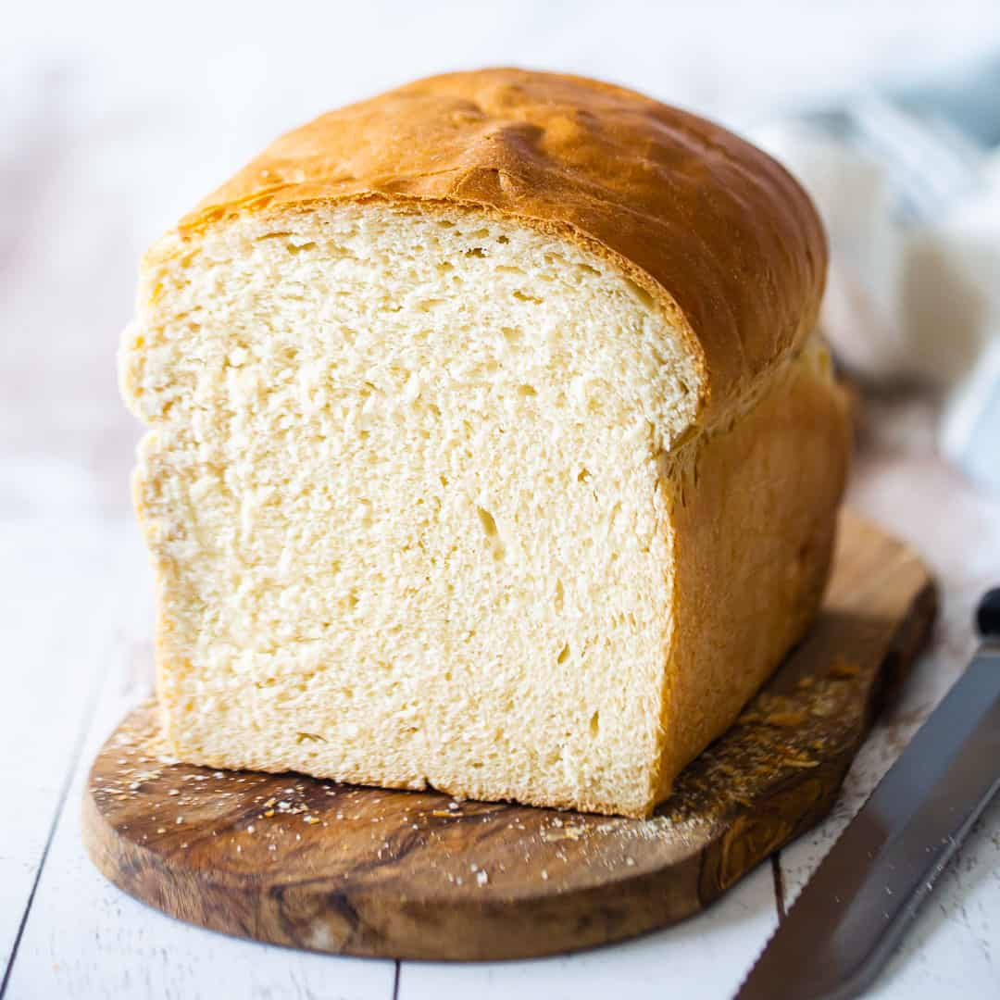

This pillowy white bread recipe will be your new favorite! Straightforward
& easy to make, and it bakes up so soft & fluffy! A perfect sandwich bread.

Ingredients
- 1 1/2 cups warm water
- 3 tablespoons granulated sugar
- 1/4 ounce active dry yeast* (1 packet)
- 3 tablespoons unsalted butter, softened
- 3 3/4 cup all-purpose flour (you may need as much as 4 1/2 cups)
- 3/4 teaspoon salt
Let's get started
- Place the warm water and sugar in a large bowl and sprinkle the yeast on top. Set
aside for 5 minutes to allow the yeast to proof.
- Add the butter and 2 cups of the flour, and beat on medium speed for 3 minutes.
- Stir in an additional 1 1/4 to 1 3/4 cups of flour, along with the salt, mixing until
the dough gathers itself into a ball and pulls away cleanly from the sides of the bowl.
- Continue to knead, adding an additional 1/2 to 3/4 cup flour, until the dough is smooth and
elastic (about 10 minutes).
- Place the dough in a large greased bowl, and cover loosely with plastic wrap. Allow it to rise
in a warm place until doubled in size (30 to 45 minutes).
- Lightly mist a 5 cup loaf pan with non-stick spray.
- Punch down the dough and shape it into a loaf.
- Place the dough in the prepared pan, cover it loosely with greased plastic wrap, and allow it to
rise in a warm place until doubled in size (30 to 45 minutes).
- Preheat the oven to 350 degrees F.
- Uncover the dough and bake for 40 to 45 minutes, or until the loaf sounds hollow when lightly tapped.
Recipe Notes
*Instant yeast may be substituted. Rise time may need to be reduced by 10 to 15 minutes. You'll know your dough
is done rising when it has doubled in volume.
Nutrition Facts
Per Serving: 463 calories; protein 4g; carbohydrates 33g; fat 3g; cholesterol 8mg; sodium 148mg.
Return to top
Return to home